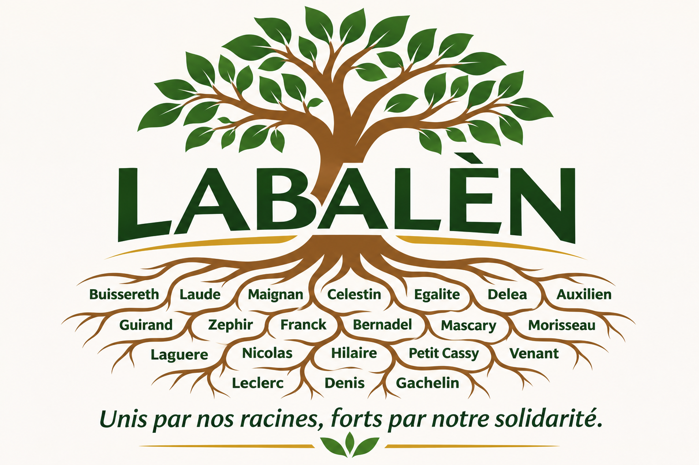

Labalèn, Haïti
D’où viennent nos familles
Labalèn est le lieu de vie de ses habitants et fait partie de l’histoire de nombreuses familles établies à l’étranger. Konbit Pou Labalèn s’appuie sur ces liens pour améliorer la vie quotidienne dans la communauté.
Nos racines à Labalèn
Pour beaucoup de familles établies à l’étranger, les premiers souvenirs de Labalèn viennent des récits des parents et des grands-parents. Konbit Pou Labalèn donne à la nouvelle génération l’occasion de renouer avec ces racines et de participer.

Agrandir l’arbre des famillesQu’est-ce qu’un konbit ?
Le konbit est une tradition haïtienne de travail collectif au service de la communauté. KPL perpétue cette tradition en réunissant les habitants et les familles de la diaspora autour de priorités définies à Labalèn.
Comment les projets prennent forme
Nous commençons par écouter les habitants. Ensuite, nous cherchons comment les personnes sur place et à l’étranger peuvent offrir du temps, des compétences, des matériaux ou un soutien financier. Nous présenterons les prochains projets ici au fur et à mesure qu’ils prendront forme.
Nos projets